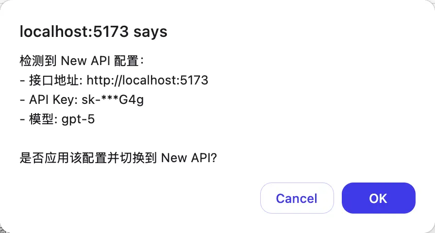
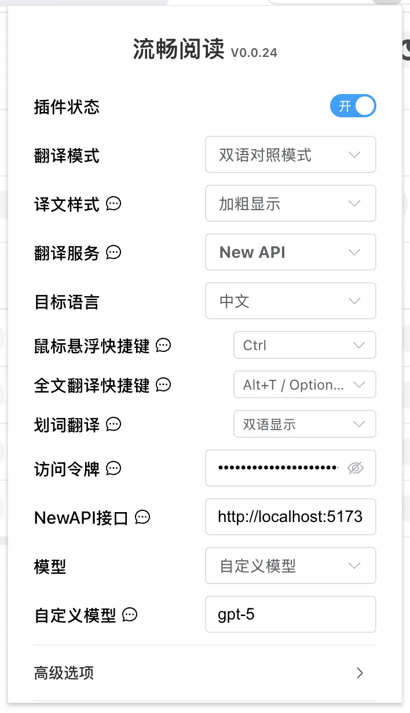
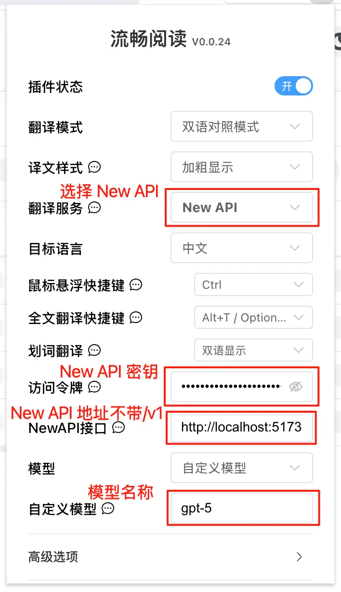

阅读
流畅阅读 接入教程
完整复刻源站 FluentRead 教程密度：核心特性、安装方式、控制台导入和手动配置。
浏览器插件双语阅读翻译
项目介绍
🌊 流畅阅读（FluentRead）是一款开源浏览器翻译插件，致力于提供母语般的阅读体验。
🌟 核心特性
智能翻译引擎
- 多引擎支持：支持 20+ 种翻译引擎
- 传统翻译：微软翻译、谷歌翻译、DeepL翻译等
- AI 大模型：OpenAI、DeepSeek、Kimi、Ollama等
- 自定义引擎：支持自定义翻译服务配置
沉浸式阅读体验
- 双语对照：原文与译文并列显示，阅读更轻松
- 划词翻译：选中任意文本，即时获得翻译结果
- 一键复制：快速复制译文，提高阅读效率
- 全文翻译：悬浮球一键翻译整个网页，无需刷新页面
隐私与定制
- 隐私保护：所有数据本地存储，代码开源透明
- 高度定制：丰富的自定义选项，满足不同场景需求
- 完全免费：开源免费，非商业化项目
📦 安装方式
| 浏览器 | 安装方式 | |
|---|---|---|
| Chrome | Chrome 应用商店 | 国内镜像 |
| Edge | Edge 应用商店 | |
| Firefox | Firefox 附加组件商店 |
🚀 配置方法
从 词元.fast API 控制台导入配置（推荐）
当浏览器安装了流畅阅读插件后，打开 词元.fast API 控制台->令牌管理页面会弹出添加流畅阅读的提示
选择模型后点击一键填充到FluentRead，会弹出确认窗口，检查对应的信息是否正确

确认导入后在流畅阅读中的 NewAPI配置便会启用

在流畅阅读中手动填写配置

| 配置项 | 内容 |
|---|---|
| 翻译服务 | NewAPI |
| 访问令牌 | 词元.fast的 密钥 |
| NewAPI接口 | https://ciyuan.fast |
| 模型 | 列表中选择，或者自定义模型 |
| 自定义模型 | 模型名称 |